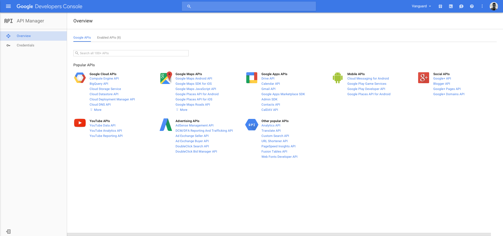
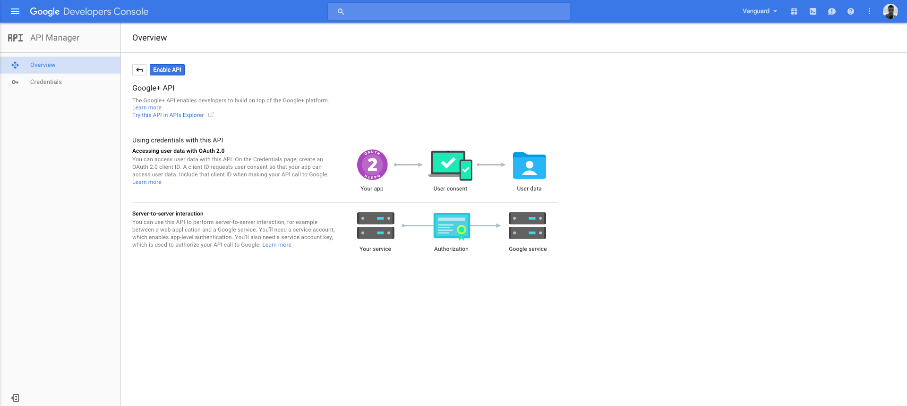
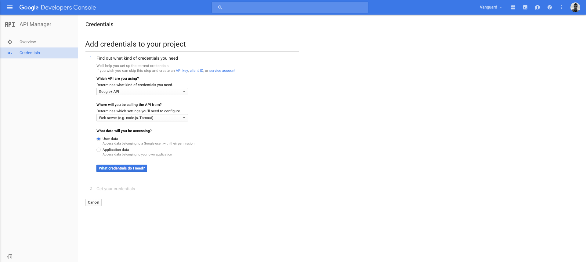

Configuration
Configuration
This section contains some important configuration options that are specific to Vanguard application. Since Vanguard is using Laravel PHP framework, full configuration options for some framework specific stuff can be found inside Laravel documentation.
Social Authentication
If you want to allow social authentication for your users, you will have to define which social providers you want to allow. List of social providers is declared inside config/auth.php file. Vanguard supports Facebook, Twitter and Google+ by default.
The following code is an example of allowing all three default supported providers for Vanguard application:
'social' => [
'providers' => ['facebook', 'twitter', 'google']
],If you want to disable some social provider, just remove it from that providers array and you are good to go. Also, if you don't want social authentication on your website, just empty that providers array, as following:
'social' => [
'providers' => []
],Here is an detailed explanation of how you can create an Facebook application and acquire application id and secret key, required for social authentication. During the application creation and configuration, make sure that you have entered correct application domain on application's settings page.
After you create an application, you can find your App Id and App Secret keys on your application's Dashboard. Those keys should be copied to .env configuration file available inside Vanguard's root directory, as following:
FACEBOOK_CLIENT_ID=your_application_id_from_facebook
FACEBOOK_CLIENT_SECRET=your_application_secret_from_facebook
FACEBOOK_CALLBACK_URI=http://YOUR_DOMAIN/auth/facebook/callbackNote! The
.envfile will be available inside your root folder after successful installation, so make sure that you have already installed the application before you start the configuration process.
Note on Callback URL
Since all social providers require callback url, if you haven't removed public from your application url, make sure that you provide the correct callback url that also contains
public segment. So, for example, your Facebook callback will look like this
http://YOUR_DOMAIN/public/auth/facebook/callbackIn order to create Twitter application, and get the required Application Id and Secret key, go to Twitter Application Management and click Create New App button at the top right corner. When app creation form is opened, fill all required fields and click Create your Twitter Application button at the bottom of the page.
Note! Your Callback URL is
http://YOUR_DOMAIN/auth/twitter/callback.
After application is created, go to Keys and Access Tokens tab, grab your Consumer Key and Consumer Secret and paste them into your .env file as following:
TWITTER_CLIENT_ID=your_consumer_key
TWITTER_CLIENT_SECRET=your_consumer_secret
TWITTER_CALLBACK_URI=http://YOUR_DOMAIN/auth/twitter/callbackGoogle+
In order to utilise Google+ Authentication, first you need to create new Google Project/Application. To do that, go to https://console.developers.google.com/project, click Create project button at top left corner and enter your Project name.
After you have created your project, you now have to enable Google+ API and get the credentials that will be used for authentication. Go to https://console.developers.google.com/apis/library, select your project from dropdown available on top right header and click on Google+ API link inside the list of available Google APIs.

After opening the Google+ API page, click Enable API button in order to enable the API.

After enabling the API, the only remaining step is to get the credentials you need. Just click on Go to Credentials button, fill the displayed credentials form as following and click What credentials do I need? button:

After entering in the required application Name, make sure that you enter http://YOUR_DOMAIN in Authorized JavaScript origins section, and http://YOUR_DOMAIN/auth/google/callback in Authorized redirect URIs section.
After you fill those fields, click Create client ID button, provide your product name as required, and get your Client Id and Client Secret keys.
When you have those keys, the only thing left for you to do is to paste them into your .env file as following:
GOOGLE_CLIENT_ID=your_client_id
GOOGLE_CLIENT_SECRET=your_client_secret
GOOGLE_CALLBACK_URI=http://YOUR_DOMAIN/auth/google/callbackTwo-Factor Authentication (2FA)
Vanguard utilises Authy, reliable third-party service, to allow Two-Factor Authentication for users.
All you need to do is to login to your Authy Dashboard (or create an Authy account if you are not already registered) and create New Application. After creating the application, you will be able to get your Api Key from your application's Dashboard. When you have your API Key, you should paste it to your .env file as following:
AUTHY_KEY=your_authy_api_keyAnd that's it, you are now able to Enable/Disable Two-Factor authentication anytime you want from your Auth and Registration settings page.
Google reCAPTCHA
Google's reCAPTCHA is available for Vanguard's user registration form. Enabling reCAPTCHA is, fortunately, an easy thing to do. Just go to reCaptcha Website, get your Site Key and Secret Key and paste them into your .env file as following:
RECAPTCHA_SECRETKEY=your_recaptcha_secret_key
RECAPTCHA_SITEKEY=your_recaptcha_site_keyThat's all you need to do. Now you are able to enable or disable reCAPTCHA on your registration page from Auth and Registration settings page.
Email Configuration
By default, Vanguard will be configured to use native PHP mail driver for sending emails. However, you can configure it to use SMTP, Sendmail, Mailgun, Mandrill, Amazon SES or Log driver (good for development purposes).
Here we will cover only SMTP configuration, and if you are interested in other options mentioned above, you can find all details of how to enable them inside Laravel Documentation.
SMTP
In order to switch to SMTP driver, instead of native PHP mail, just open your .env file and define your mail environment variables as following:
MAIL_DRIVER=smtp
MAIL_HOST=your_smtp_host
MAIL_PORT=your_smtp_port
MAIL_USERNAME=your_smtp_username
MAIL_PASSWORD=your_smtp_password
MAIL_ENCRYPTION=your_smtp_encryptionNote! If your SMTP server does not have encryption, just set it to
null, or set it to blank like this:MAIL_ENCRYPTION=.
Additional Mail Configuration
One thing that you would want to configure for your application is your "From" email address and "From" name. You can do that by editing config/mail.php file and updating from array to fit your needs.
Session Configuration
Vanguard support multiple session drivers like File, Cookie, Database, APC, Memcached, Redis and Array (used for testing purposes only).
Note! Default session driver is Database, since it is the only driver that support user session management. If you change database driver to any other driver than session, Active Sessions Management feature will be disabled.
Changing session driver is as easy as updating your SESSION_DRIVER variable inside .env file and changing it's value to one of above drivers (all lowercase).
For example, if you want to switch to File session driver, you will update your .env file like following:
SESSION_DRIVER=fileThat's it, you don't have to change anything inside your codebase. Everything will be working as usual, except you won't be able to track user sessions.
More session configuration options are available inside config/session.php configuration file. Feel free to check that file and configure things such as session lifetime, session cookie name etc.
HTTPS
If you want to force all the pages to be accessed via HTTPS, the recommended way to do so is via your web server configuration. Either if you are using Apache or nginx, or some other web server, you can easily configure them to redirect all traffic to HTTPS.
However, if you are not sure how to do that or your server configuration does not allow you so, you can simply add FORCE_SSL variable to your .env file and set it to true. It will force all links to be served via HTTPS.
So, inside your .env file, it should look like following:
//...
FORCE_SSL=trueDate/Time Format
Date and date-time format can be configured inside the config/app.php file. By editing date_format and date_time_format configuration parameters there you are able to configure
how it will be formatted across the application.
JSON API
Built in JSON API is disabled by default, and if you want to enable it, just add new .env variable like following:
//...
EXPOSE_API=trueAfter that your api will be located at yourcomain.com/api and you can start using it. The API documentation
is available here.